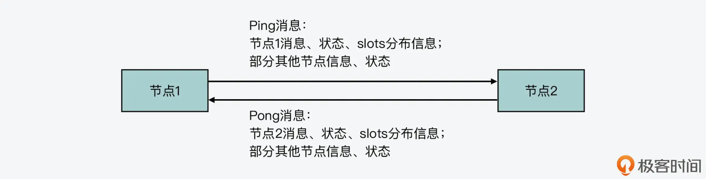

- 00 开篇词 阅读Redis源码能给你带来什么？.md
- 01 带你快速攻略Redis源码的整体架构.md
- 02 键值对中字符串的实现，用char还是结构体？.md
- 03 如何实现一个性能优异的Hash表？.md
- 04 内存友好的数据结构该如何细化设计？.md
- 05 有序集合为何能同时支持点查询和范围查询？.md
- 06 从ziplist到quicklist，再到listpack的启发.md
- 07 为什么Stream使用了Radix Tree？.md
- 08 Redis server启动后会做哪些操作？.md
- 09 Redis事件驱动框架（上）：何时使用select、poll、epoll？.md
- 10 Redis事件驱动框架（中）：Redis实现了Reactor模型吗？.md
- 11 Redis事件驱动框架（下）：Redis有哪些事件？.md
- 12 Redis真的是单线程吗？.md
- 13 Redis 6.0多IO线程的效率提高了吗？.md
- 14 从代码实现看分布式锁的原子性保证.md
- 15 为什么LRU算法原理和代码实现不一样？.md
- 16 LFU算法和其他算法相比有优势吗？.md
- 17 Lazy Free会影响缓存替换吗？.md
- 18 如何生成和解读RDB文件？.md
- 19 AOF重写（上）：触发时机与重写的影响.md
- 20 AOF重写（下）：重写时的新写操作记录在哪里？.md
- 21 主从复制：基于状态机的设计与实现.md
- 22 哨兵也和Redis实例一样初始化吗？.md
- 23 从哨兵Leader选举学习Raft协议实现（上）.md
- 24 从哨兵Leader选举学习Raft协议实现（下）.md
- 25 PubSub在主从故障切换时是如何发挥作用的？.md
- 26 从Ping-Pong消息学习Gossip协议的实现.md
- 27 从MOVED、ASK看集群节点如何处理命令？.md
- 28 Redis Cluster数据迁移会阻塞吗？.md
- 29 如何正确实现循环缓冲区？.md
- 30 如何在系统中实现延迟监控？.md
- 31 从Module的实现学习动态扩展功能.md
- 32 如何在一个系统中实现单元测试？.md
- 结束语 Redis源码阅读，让我们从新开始.md
26 从Ping-Pong消息学习Gossip协议的实现
从这节课开始，我们又将进入一个新的模块：“Redis Cluster”模块。在这个模块中，我会带你了解 Redis Cluster 的关键功能实现，包括了 Gossip 协议通信、集群关键命令和数据迁移等机制的设计与实现。
通过这些课程的学习，一方面，你可以深入了解 Redis 是如何完成集群关系维护、请求转发和数据迁移的。当你遇到集群问题时，这些知识可以帮助你排查问题。另一方面，当你在开发分布式集群时，不可避免地会遇到节点信息维护、数据放置和迁移等设计问题，接下来的几节课可以让你掌握 Gossip 协议、数据迁移等分布式集群中关键机制的典型设计和实现，而这些实现方法对于你开发分布式集群是很有帮助的。
那么接下来，我就先带你来学习 Redis Cluster 中节点的通信机制，而这个通信机制的关键是 Gossip 协议。所以今天这节课，我们主要来了解下 Gossip 协议在 Redis 中是如何实现的。
Gossip 协议的基本工作机制
对于一个分布式集群来说，它的良好运行离不开集群节点信息和节点状态的正常维护。为了实现这一目标，通常我们可以选择中心化的方法，使用一个第三方系统，比如 Zookeeper 或 etcd，来维护集群节点的信息、状态等。同时，我们也可以选择去中心化的方法，让每个节点都维护彼此的信息、状态，并且使用集群通信协议 Gossip 在节点间传播更新的信息，从而实现每个节点都能拥有一致的信息。
下图就展示了这两种集群节点信息维护的方法，你可以看下。

我在【第一季】的“通信开销：限制 Redis Cluster 规模的关键因素”课程中，介绍过 Gossip 协议的工作机制，你可以去参考或回顾下。这里，我就简单介绍下 Gossip 协议的主要机制，来帮助你更好地理解接下来要学习的 Gossip 协议，在源码层面的设计与实现。
简单来说，在一个使用了 Gossip 协议的集群中，每个集群节点会维护一份集群的状态信息，包括集群中各节点的信息、运行状态，以及数据在各节点间的分布情况。
对于 Redis 来说，集群节点信息包括了节点名称、IP、端口号等，而节点运行状态主要用两个时间来表示，分别是节点向其他节点发送 PING 消息的时间，以及它自己收到其他节点返回的 PONG 消息的时间。最后，集群中数据的分布情况，在 Redis 中就对应了 Redis Cluster 的 slots 分配情况，也就是每个节点拥有哪些 slots。
当集群节点按照 Gossip 协议工作时，每个节点会以一定的频率从集群中随机挑选一些其他节点，把自身的信息和已知的其他节点信息，用 PING 消息发送给选出的节点。而其他节点收到 PING 消息后，也会把自己的信息和已知的其他节点信息，用 PONG 消息返回给发送节点，这个过程如下图所示：

Gossip 协议正是通过这种随机挑选通信节点的方法，让节点信息在整个集群中传播。当有节点维护的信息发生变化时，比如数据布局信息发生了改变，那么通过几轮通信后，其他节点也可以获得这一变化的信息了。这样一来，就实现了分布式集群所有节点维护一致的状态信息的目标。
好了，了解了 Gossip 协议的基本工作机制后，下面我们就来学习 Redis 中是如何实现 Gossip 协议的。
Redis 是如何实现 Gossip 通信的？
首先，你要知道 Redis Cluster 的主要功能是在 cluster.h 和 cluster.c 两个文件中定义和实现的。如果你有进一步阅读源码的需求，可以重点从这两个文件中查找。
然后，我们来看下 Redis Cluster 中通信的消息有哪些，这也是 Gossip 协议通信的基础数据结构。
节点通信的常见消息有哪些？
Redis 源码在 cluster.h 文件中，通过宏定义定义了节点间通信的消息类型。下面的代码列了几种常见的消息，包括 Ping 消息，这是一个节点用来向其他节点发送信息的消息类型，而 Pong 是对 Ping 消息的回复。Meet 消息是一个节点表示要加入集群的消息类型，而 Fail 消息表示某个节点有故障。如果你想了解更多的消息类型，可以进一步阅读 cluster.h 文件。
#define CLUSTERMSG_TYPE_PING 0 //Ping消息，用来向其他节点发送当前节点信息
#define CLUSTERMSG_TYPE_PONG 1 //Pong消息，对Ping消息的回复
#define CLUSTERMSG_TYPE_MEET 2 //Meet消息，表示某个节点要加入集群
#define CLUSTERMSG_TYPE_FAIL 3 //Fail消息，表示某个节点有故障
刚才我介绍的是节点间通信的消息类型，那么，**Redis 源码中消息的数据结构具体是怎样的呢？**这部分内容也是在 cluster.h 文件中定义的。
Redis 定义了一个结构体 clusterMsg，它用来表示节点间通信的一条消息。它包含的信息包括发送消息节点的名称、IP、集群通信端口和负责的 slots，以及消息类型、消息长度和具体的消息体。下面的代码展示了 clusterMsg 定义中的部分重要内容，你可以看下。
typedef struct {
…
uint32_t totlen; //消息长度
uint16_t type; //消息类型
…
char sender[CLUSTER_NAMELEN]; //发送消息节点的名称
unsigned char myslots[CLUSTER_SLOTS/8]; //发送消息节点负责的slots
char myip[NET_IP_STR_LEN]; //发送消息节点的IP
uint16_t cport; //发送消息节点的通信端口
…
union clusterMsgData data; //消息体
} clusterMsg;
从 clusterMsg 数据结构中，我们可以看到它包含了一个联合体结构 clusterMsgData，而这个数据结构正是定义了节点间通信的实际消息体。
在 cluster.h 文件中，我们可以看到 clusterMsgData 的定义，它包含了多种消息类型对应的数据结构，包括 clusterMsgDataGossip、clusterMsgDataFail、clusterMsgDataPublish 和 clusterMsgDataUpdate，如下所示，而这些数据结构也就对应了不同类型消息的消息体。
union clusterMsgData {
//Ping、Pong和Meet消息类型对应的数据结构
struct {
clusterMsgDataGossip gossip[1];
} ping;
//Fail消息类型对应的数据结构
struct {
clusterMsgDataFail about;
} fail;
//Publish消息类型对应的数据结构
struct {
clusterMsgDataPublish msg;
} publish;
//Update消息类型对应的数据结构
struct {
clusterMsgDataUpdate nodecfg;
} update;
//Module消息类型对应的数据结构
struct {
clusterMsgModule msg;
} module;
};
在这个联合体结构中，我们重点看下 clusterMsgDataGossip 数据结构，因为它对应了 Gossip 协议通信过程中使用的 Ping、Pong 和 Meet 消息的消息体。clusterMsgDataGossip 数据结构定义如下所示：
typedef struct {
char nodename[CLUSTER_NAMELEN]; //节点名称
uint32_t ping_sent; //节点发送Ping的时间
uint32_t pong_received; //节点收到Pong的时间
char ip[NET_IP_STR_LEN]; //节点IP
uint16_t port; //节点和客户端的通信端口
uint16_t cport; //节点用于集群通信的端口
uint16_t flags; //节点的标记
uint32_t notused1; //未用字段
} clusterMsgDataGossip;
从 clusterMsgDataGossip 数据结构中，我们可以看到，它里面包含了节点的基本信息，比如节点名称、IP 和通信端口，以及使用 Ping、Pong 消息发送和接收时间来表示的节点运行状态。这就和我刚才给你介绍的 Gossip 协议工作机制中的通信内容对应上了。
那么，Gossip 协议在通信过程中传播的 slots 分布信息，也已经在刚才介绍的 clusterMsg 数据结构中定义了。所以，Redis 使用 clusterMsg 结构体作为节点间通信的消息，就可以实现 Gossip 协议的通信目的。如果你要开发 Gossip 协议，可以参考这里 clusterMsg、clusterMsgData 和 clusterMsgDataGossip 的定义。
好了，了解了 Redis Cluster 中节点通信的消息定义后，接下来，我们来看下 Gossip 协议中的收发消息具体是如何实现的。
Ping 消息的生成和发送
Gossip 协议是按一定的频率随机选一些节点进行通信的。那么在前面课程的学习中，我们已经知道，Redis 的 serverCron 函数是在周期性执行的。而它会调用 clusterCron 函数（在 cluster.c 文件中）来实现集群的周期性操作，这就包括了 Gossip 协议的通信。
int serverCron(struct aeEventLoop *eventLoop, long long id, void *clientData) {
…
run_with_period(100) {
//每100ms调用依次clusterCron函数
if (server.cluster_enabled) clusterCron();
}
…
}
clusterCron 函数的一个主要逻辑就是每经过 10 次执行，就会随机选五个节点，然后在这五个节点中，遴选出最早向当前节点发送 Pong 消息的那个节点，并向它发送 Ping 消息。而 clusterCron 函数本身是每 1 秒执行 10 次，所以，这也相当于是集群节点每 1 秒向一个随机节点发送 Gossip 协议的 Ping 消息。
下面的代码展示了 clusterCron 函数的这一执行逻辑，你可以看下。
void clusterCron(void) {
…
if (!(iteration % 10)) { //每执行10次clusterCron函数，执行1次该分支代码
int j;
for (j = 0; j < 5; j++) { //随机选5个节点
de = dictGetRandomKey(server.cluster->nodes);
clusterNode *this = dictGetVal(de);
//不向断连的节点、当前节点和正在握手的节点发送Ping消息
if (this->link == NULL || this->ping_sent != 0) continue;
if (this->flags & (CLUSTER_NODE_MYSELF|CLUSTER_NODE_HANDSHAKE))
continue;
//遴选向当前节点发送Pong消息最早的节点
if (min_pong_node == NULL || min_pong > this->pong_received) {
min_pong_node = this;
min_pong = this->pong_received;
}
}
//如果遴选出了最早向当前节点发送Pong消息的节点，那么调用clusterSendPing函数向该节点发送Ping消息
if (min_pong_node) {
serverLog(LL_DEBUG,"Pinging node %.40s", min_pong_node->name);
clusterSendPing(min_pong_node->link, CLUSTERMSG_TYPE_PING);
}
}
…
}
从这段代码中，我们可以看到，向其他节点发送 Ping 消息的函数是 clusterSendPing，而实际上，Ping 消息也是在这个函数中完成构建和发送的。 clusterSendPing 函数的主要逻辑可以分成三步，分别是：构建 Ping 消息头、构建 Ping 消息体和发送消息。我们分别来看下。
第一步，构建 Ping 消息头
clusterSendPing 函数会调用 clusterBuildMessageHdr 函数来构建 Ping 消息头，如下所示：
if (link->node && type == CLUSTERMSG_TYPE_PING)
link->node->ping_sent = mstime(); //如果当前是Ping消息，那么在发送目标节点的结构中记录Ping消息的发送时间
clusterBuildMessageHdr(hdr,type); //调用clusterBuildMessageHdr函数构建Ping消息头
在刚才学习 Redis Cluster 节点间通信消息的数据结构时，我们知道了，每一条消息的数据结构是 clusterMsg，所以在这里，clusterBuildMessageHdr 函数也是设置 clusterMsg 结构体中的各个成员变量，比如消息类型，发送消息节点的名称、IP、slots 分布等信息。你可以进一步仔细阅读 clusterBuildMessageHdr 函数的源码，了解这些成员变量的具体设置。
不过，clusterBuildMessageHdr 函数并不会设置 clusterMsg 结构体中的 data 成员变量，这个成员变量就是刚才我介绍的 clusterMsgData 联合体，也就是 Ping 消息的消息体。因为在完成消息头的构建后，clusterSendPing 函数就会来构建消息体。
第二步，构建 Ping 消息体
你可以再看下 clusterMsgData 的数据结构定义，如下所示。当它表示 Ping、Pong 消息时，其实是一个 clusterMsgDataGossip 类型的数组，这也就是说，一个 Ping 消息中会包含多个 clusterMsgDataGossip 结构体，而每个 clusterMsgDataGossip 结构体实际对应了一个节点的信息。
union clusterMsgData {
struct {
//当消息是Ping或Pong时，使用clusterMsgDataGossip类型的数组
clusterMsgDataGossip gossip[1];
} ping;
…
}
所以，当 clusterSendPing 函数构建 Ping 消息体时，它会将多个节点的信息写入 Ping 消息。那么，**clusterSendPing 函数具体会写入多少个节点的信息呢？**这其实是由三个变量控制的，分别是 freshnodes、wanted 和 maxiterations。
其中，freshnodes 的值等于集群节点数减 2，如下所示：
int freshnodes = dictSize(server.cluster->nodes)-2;
而 wanted 变量的值和 freshnodes 大小也有关，wanted 的默认值是集群节点数的 1/10，但是如果这个默认值小于 3，那么 wanted 就等于 3。如果这个默认值大于 freshnodes，那么 wanted 就等于 freshnodes 的大小，这部分的计算逻辑如下所示：
wanted = floor(dictSize(server.cluster->nodes)/10);
if (wanted < 3) wanted = 3;
if (wanted > freshnodes) wanted = freshnodes;
有了 wanted 值之后，maxiterations 的值就等于 wanted 的三倍大小。
int maxiterations = wanted*3;
在计算完 freshnodes、wanted 和 maxiterations 这三个值的大小后，clusterSendPing 会根据这三个值的大小，执行一个循环流程，在这个循环中，它每次从集群节点中随机选一个节点出来，并调用 clusterSetGossipEntry 函数为这个节点设置相应的 Ping 消息体，也就是 clusterMsgDataGossip 结构。关于 clusterSetGossipEntry 函数对 clusterMsgDataGossip 结构的具体设置，你可以进一步看下它的源码。
当然，如果选出的节点是当前节点自身、可能有故障的节点、正在握手的节点、失联的节点以及没有地址信息的节点，那么 clusterSendPing 是不会为这些节点设置 Ping 消息体的。
下面的代码展示了 clusterSendPing 函数设置 Ping 消息体的基本逻辑，你可以看下。
while(freshnodes > 0 && gossipcount < wanted && maxiterations--) {
dictEntry *de = dictGetRandomKey(server.cluster->nodes);
clusterNode *this = dictGetVal(de);
…
clusterSetGossipEntry(hdr,gossipcount,this); //调用clusterSetGossipEntry设置Ping消息体
freshnodes--;
gossipcount++;
}
这里，你需要注意的是，对可能有故障的节点，clusterSendPing 函数会将它们的信息放在 Ping 消息体的最后。
第三步，发送 Ping 消息
好了，到这里，Ping 消息体的构建就完成了。那么，clusterSendPing 函数主体逻辑的最后一步就是调用 clusterSendMessage 函数，将 Ping 消息发送给随机选出的目标节点。这样一来，Gossip 协议要求的，向随机选出的节点发送当前节点信息的操作就完成了。
我画了下面的这张图，展示了 clusterSendPing 函数的主体逻辑，你可以再回顾下。

接下来，我们再来看下当节点收到 Ping 消息后的处理，也就是 Pong 消息的发送。
Ping 消息的处理和 Pong 消息的回复
在刚才介绍的 clusterCron 函数中，节点在调用 clusterSendPing 函数向其他节点发送 Ping 消息前，会检查它和其他节点连接情况，如果连接断开了，节点会重新建立连接，如下所示：
void clusterCron(void) {
…
di = dictGetSafeIterator(server.cluster->nodes);
while((de = dictNext(di)) != NULL) {
clusterNode *node = dictGetVal(de);
…
if (node->link == NULL) {
…
fd = anetTcpNonBlockBindConnect(server.neterr, node->ip,
node->cport, NET_FIRST_BIND_ADDR);
…
link = createClusterLink(node);
link->fd = fd;
node->link = link;
aeCreateFileEvent(server.el,link->fd,AE_READABLE, clusterReadHandler,link);
…
}
…
}
…
}
从代码中，我们可以看到，一个节点在和其他节点建立的连接上，设置的监听函数是 clusterReadHandler。所以，当一个节点收到 Ping 消息时，它就会在 clusterReadHandler 函数中进行处理，我们来看下这个函数。
clusterReadHandler 函数执行一个 while(1) 循环，并在这个循环中读取收到的消息，当读到一个完整的消息后，它会调用 clusterProcessPacket 函数处理这个消息，如下所示：
void clusterReadHandler(aeEventLoop *el, int fd, void *privdata, int mask) {
…
while(1) { //持续读取收到的数据
rcvbuflen = sdslen(link->rcvbuf);
…
nread = read(fd,buf,readlen); //读取收到的数据
…
//读取到一个完整的消息
if (rcvbuflen >= 8 && rcvbuflen == ntohl(hdr->totlen)) {
if (clusterProcessPacket(link)) { …} //调用clusterProcessPacket函数处理消息
…
}
}
因为节点间发送的消息类型不止 Ping 消息，所以 clusterProcessPacket 函数会先从收到的消息头中读取消息类型，然后根据不同的消息类型，执行不同的代码分支。
当收到的是 Ping 消息时，clusterProcessPacket 函数会先调用 clusterSendPing 函数，向 Ping 消息发送节点返回 Pong 消息，如下所示：
int clusterProcessPacket(clusterLink *link) {
…
if (type == CLUSTERMSG_TYPE_PING || type == CLUSTERMSG_TYPE_MEET) {
… //处理Meet消息，将发送Meet消息的节点加入本地记录的节点列表中
clusterSendPing(link,CLUSTERMSG_TYPE_PONG); //调用clusterSendPing函数返回Pong消息。
}
…
}
从这里你可以看到，Ping 和 Pong 消息使用的是同一个函数 clusterSendPing 来生成和发送的，所以它们包含的内容也是相同的。这也就是说，Pong 消息中也包含了 Pong 消息发送节点的信息和它已知的其他节点信息。因此，Ping 消息的发送节点从 Pong 消息中，也能获取其他节点的最新信息，这就能实现 Gossip 协议通过多轮消息传播，达到每个节点拥有一致信息的目的。
这里，你还需要注意的是，无论是 Ping 消息的目标节点收到 Ping 消息，还是发送 Ping 消息的节点收到目标节点返回的 Pong 消息，它们都会在 clusterProcessPacket 函数的同一个代码分支中进行处理，比如更新最新 Pong 消息的返回时间，根据消息头中的 slots 分布信息更新本地的 slots 信息。此外，clusterProcessPacket 函数还会调用 clusterProcessGossipSection 函数，依次处理 Ping-Pong 消息中包含的多个消息体。
这样一来，收到 Ping 或 Pong 消息的节点，就可以根据消息体中的信息，更新本地记录的对应节点的信息了。你可以进一步阅读 clusterProcessGossipSection 函数源码，了解它根据消息体内容对本地记录的节点信息的更新设置。
下面的代码就展示了节点收到 Ping-Pong 消息后，对本地信息进行更新的代码分支，你可以看下。
int clusterProcessPacket(clusterLink *link) {
…
if (type == CLUSTERMSG_TYPE_PING || type == CLUSTERMSG_TYPE_PONG ||
type == CLUSTERMSG_TYPE_MEET)
{
…
//当收到Pong消息时，更新本地记录的目标节点Pong消息最新返回时间
if (link->node && type == CLUSTERMSG_TYPE_PONG) {
link->node->pong_received = mstime();
…
}
…//如果发送消息的节点是主节点，更新本地记录的slots分布信息
//调用clusterProcessGossipSection函数处理Ping或Pong消息的消息体
if (sender) clusterProcessGossipSection(hdr,link);
}
…
}
好了，到这里，我们就了解了按照 Gossip 协议发送的 Ping、Pong 消息的整体处理过程。从中，我们也看到了 Redis 实现 Gossip 协议用到的数据结构和主要函数，我画了两张表，分别汇总了刚才介绍的数据结构和函数，你可以再回顾下。


小结
今天这节课，我给你介绍了 Redis Cluster 使用的 Gossip 协议的设计和实现。Gossip 协议实现的关键有两个，一个是要通过 Ping-Pong 消息发送节点自身的信息，以及节点已知的其他节点的信息。针对这一点，Redis 是设计了 clusterMsg 结构的消息，其中消息头包含了发送消息节点自身的信息，比如名称、IP、端口号、slots 分布等。
而 clusterMsg 结构中的消息体，是设计使用了 clusterMsgDataGossip 类型的数组，这个数组的每一个元素对应了发送消息节点已知的一个节点的信息。这样一来，发送消息节点通过 Ping 消息可以把自己的信息和已知的其他节点信息传播出去。
同样的，收到 Ping 消息的节点，也会使用同样结构的 Pong 消息将自己的信息和它已知的其他节点信息返回给发送节点。这样一来，就能实现 Gossip 协议的要求。
Gossip 协议实现的另一个关键就是要随机选择节点发送，这一点，Redis Cluster 在源码中就比较容易实现了。其实，就是 clusterCron 函数先通过随机选择五个节点，然后，再在其中挑选和当前节点最长时间没有发送 Pong 消息的节点，作为目标节点，这样一来，也满足了 Gossip 协议的要求。
通过今天这节课的学习，我希望你能了解 Redis Cluster 设计的消息结构、周期发送 Ping 和 Pong 消息的整体执行逻辑。这些都是你可以用在自行开发 Gossip 协议时的经典参考设计。
每课一问
在今天课程介绍的源码中，你知道为什么 clusterSendPing 函数计算 wanted 值时，是用的集群节点个数的十分之一吗？
© 2019 - 2023 Liangliang Lee. Powered by Vert.x and hexo-theme-book.